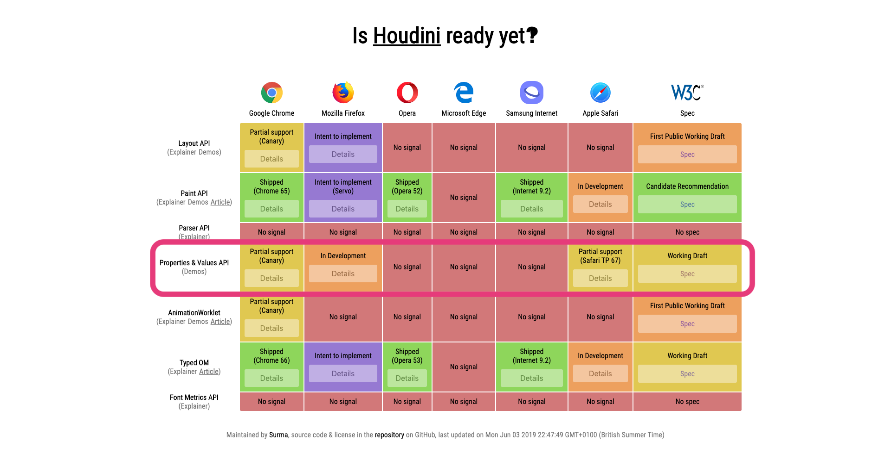

Chrome 78 Betaで試すCSS Properties and Values API
Meguro.css #7 @ ラクスル
あらや @arayaryoma
自己紹介
- 🙋♂️ あらや
- 🐦 Twitter: @arayaryoma
- 💻 Web engineer at Hematite Inc.
- ❤️ Web standards, TypeScript, Go
CSS Properties and Values APIとは
- CSS Houdiniの1つ
- CSSのCustom Propertiesを構造化するためのAPI
- CSSのCustom Propertyに初期値とsyntax(型のようなもの)を指定することができる
- Chrome 78に搭載予定
API
使える関数は現在window.CSS.registerPropertyのみ
window.CSS.registerProperty({
name: '--property-name', // 対象のcustom propertyの名前
syntax: '*', // 値をどうパースするか
inherits: true, // 親要素の値を継承するか
initialValue: '', // 初期値
});
supported syntax
syntaxに使える文字列は draft で定義されている。
<length><number><percentage><color><image>- ...など
一度registerしたpropertyはre-registerできない
CSS.registerProperty({
name: '--my-color',
inherits: false,
initialValue: '#55CC55',
syntax: '<color>'
})
CSS.registerProperty({
name: '--my-color',
inherits: false,
initialValue: 'black',
syntax: '<color>'
})
/*
Uncaught DOMException: Failed to execute 'registerProperty' on 'CSS':
The name provided has already been registered.
*/
呼び出し時にsyntaxに一致しない値を指定するとErrorが吐かれる
CSS.registerProperty({
name: '--box-color',
syntax: '<url>',
inherits: false,
initialValue: '#FFFFFF',
});
/*
Uncaught DOMException: Failed to execute 'registerProperty' on 'CSS':
The initial value provided does not parse for the given syntax.
*/
Demo
試用方法
- Chrome: Beta, Dev, Canary channel
- Safari: Technology PreviewでExperimental FeaturesからCSS Custom Properties and Values APIを有効にする
- ただ発表者が試したところ動かなかった
各ブラウザの対応状況
http://ishoudinireadyyet.com/
